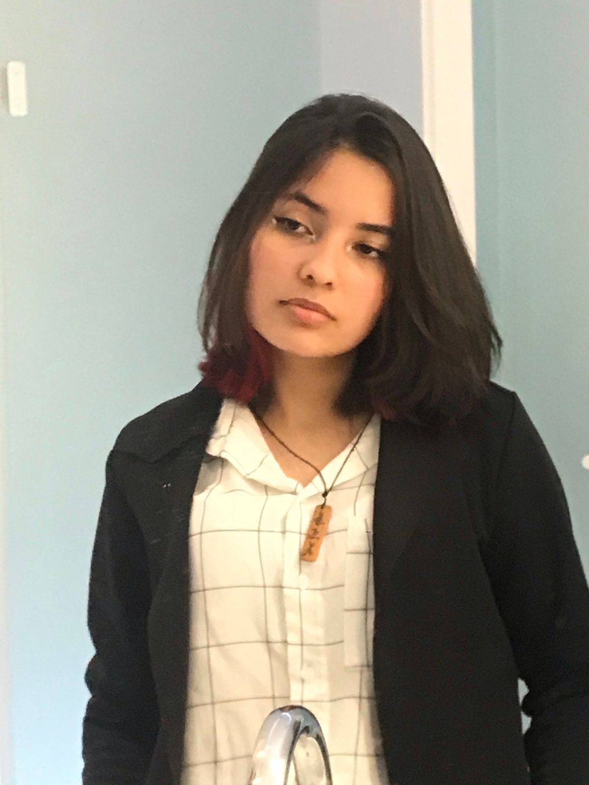

Beatriz Yoshimi Mendes Yukizaki

Idade: 18 anos
Cidade: Paranaguá - PR
Endereço: Rua Francisco Machado, Bairro Porto dos Padres, 1443
Contato: (41) 992707773
E-mail: byoshimii@gmail.com
Objetivos
Buscando a primeira experiência profissional, a fim de contribuir para a empresa e capacitar assim minha formação profissional e pessoal.
Formação Acadêmica
Curso: 3º ano do Ensino Médio - Concluído
Instituição: Colégio Evangélico Jerusalém
Curso: Tecnólogo em Análise e Desenvolvimento de Sistemas - Cursando 2º Semestre
Instituição: Instituto Federal do Paraná - Campus Paranaguá
Qualificações e Atividades Complementares
- Inglês
FISK - Concluído
- Estágio
Smart Harpia da INCUBADORA IFPR - Cursando
- Assistente de TI
SENAC - Concluído
- Curso de Arduíno - Básico ao avançado
UDEMY - Concluído
- C# Completo para Orientação a Objetos
UDEMY - Concluído
- Tecnologias para o setor do trasnporte
SEST/SENAT - Concluído
- Introdução à Análise de Dados - Microsoft Power BI
Fundação Bradesco - Cursando
- Introdução ao SQL
DataCamp - Cursando
Habilidades
- Experiência em pacote office (excel, power point, word)
- Facilidade em quaisquer funções digitais computacionais que me propuserem, tais como softwares e hardwares
- Prática em linguagens de programação(C++ e JAVA)
- Inglês avançado
- Conhecimento em microcontroladores (Arduíno e ESP32)
- Organizada
- Pensamento crítico, líder